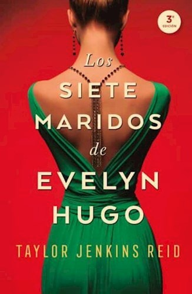
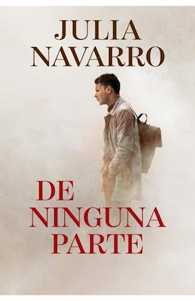
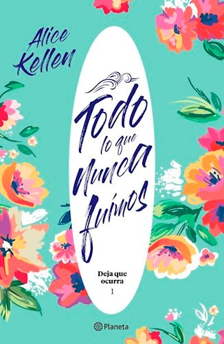

Resumen:En un presente alternativo, en el que es posible predecir la
muerte con un plazo de veinticuatro horas, Mateo Torrez y Rufus Emeterio
acaban de recibir la llamada más temida: la misma que te avisa de que ha
llegado tu hora final. En circunstancias normales, es poco probable que
Mateo y Rufus se hubieran conocido. Pero sus circunstancias no son
normales en absoluto. Porque les quedan, a lo sumo, veinticuatro horas
de vida. Y han decidido recurrir a Último Amigo, la aplicación de citas
que te permite contactar con alguien dispuesto a compartir tu carga.
Mateo y Rufus tienen un día, puede que menos, para disfrutar de su
recién nacida amistad. Para descubrir cuán frágiles y preciosos son los
hilos que nos unen. Para mostrar al mundo su verdadero yo.
Puntuacion: 9/10
Los siete maridos de Evelyn Hugo

Autora:Taylor Jenkins Reid
Resumen:Evelyn Hugo, el ícono de Hollywood que se ha recluido en su edad
madura, decide al fin contar la verdad sobre su vida llena de glamour y
de escándalos. Pero cuando elige para ello a Monique Grant, una
periodista desconocida, nadie se sorprende más que la misma Monique.
¿Por qué ella? ¿Por qué ahora? Monique no está precisamente en su mejor
momento. Su marido la abandonó, y su vida profesional no avanza. Aun
ignorando por qué Evelyn la ha elegido para escribir su biografía,
Monique está decidida a aprovechar esa oportunidad para dar impulso a su
carrera.Convocada al lujoso apartamento de Evelyn, Monique escucha
fascinada mientras la actriz le cuenta su historia. Desde su llegada a
Los Ángeles en los años 50 hasta su decisión de abandonar su carrera en
el espectáculo en los 80 -y, desde luego, los siete maridos que tuvo en
ese tiempo- Evelyn narra una historia de ambición implacable, amistad
inesperada, y un gran amor prohibido. Monique empieza a sentir una
conexión muy real con la actriz legendaria, pero cuando el relato de
Evelyn se acerca a su fin, resulta evidente que su vida se cruza con la
de Monique de un modo trágico e irreversible. «Fascinante, desgarradora
y llena del glamour de la Vieja Hollywood, Los siete maridos de Evelyn
Hugo es una de las novelas más cautivantes.»-BuzzFeed «Las aventuras
épicas que Evelyn crea en el transcurso de su vida cautivarán al lector.
Este viaje, inmensamente adictivo, de una huraña estrella de Hollywood y
su recorrido tumultuoso por la Meca del Cine llega con giros inesperados
y un dramatismo muy satisfactorio.
Puntuacion: 9/10
Asesino de brujas
Autora:Shelby Mahurin
Resumen:Unidos como uno para amarse, para honrarse o para arder. Dos
años atrás, Louise le Blanc huyó de su aquelarre y se refugió en la
ciudad de Cesarine, donde renunció a la magia para vivir de lo que
pudiera robar. Allí, cazan a brujas como Lou. Les temen. Y las queman.
Como cazador de la iglesia, Reid Diggory ha vivido su vida bajo una
regla: ' No permitirás que ninguna bruja viva '. Pero cuando Lou realiza
una gran artimaña, tanto ella como Reid se ven obligados a aceptar una
situación impensada: el matrimonio. Lou, incapaz de ignorar sus
sentimientos que son cada vez más fuertes, pero sin poder cambiar quien
es, Lou debe elegir. Asesinos de brujas: La bruja blanca se desarrolla
en un mundo de mujeres empoderadas, magia oscura y donde los romances
son fuera de serie. Cuando termines de leer, vas a querer más.
Puntuacion: 8/10
De ninguna parte

Autora: Julia Navarro
Resumen:Tras asistir al asesinato de su familia por parte del ejército
israelí, el joven Abir Nasr jura que perseguirá a los culpables hasta
conseguir vengarse. Cada noche, la amenaza de Abir se cuela en los
sueños de Jacob Baudin, uno de los soldados que participó en el ataque.
Las vidas de ambos hombres se cruzarán años después en Bruselas, una
ciudad amenazada por una organización islamista: El Círculo.
Puntuacion: 7/10
Todo lo que nunca fuimos

Autora:Alice Kellen
Resumen:Leah está rota. Leah ya no pinta. Leah es un espejismo desde el
accidente que se llevó a sus padres. Axel es el mejor amigo de su
hermano mayor y, cuando accede a acogerla en su casa durante unos meses,
quiere ayudarla a encontrar y unir los pedazos de la chica llena de
color que un día fue. Pero no sabe que ella siempre ha estado enamorada
de él, a pesar de que sean casi familia, ni de que toda su vida está a
punto de cambiar. Porque ella está prohibida, pero le despierta la piel.
Porque es el mar, noches estrelladas y vinilos de los Beatles. Porque a
veces basta un «deja que ocurra» para tenerlo todo.